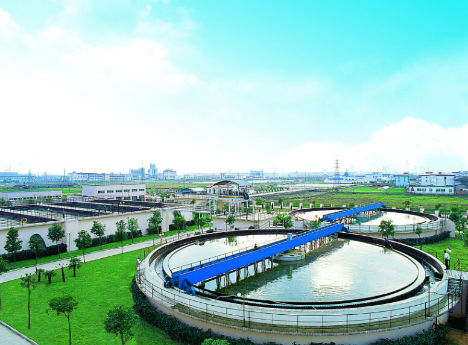

Industry Information
Dec. 13, 2024
Water treatment chemicals are indispensable in modern water management systems. From large-scale industrial cooling towers to municipal drinking water supplies, these chemical solutions ensure that water remains safe, stable, and suitable for use. As concerns around water scarcity and environmental compliance continue to rise, the role of water treatment chemicals becomes increasingly critical for operational efficiency and public health.
Water treatment is essential for maintaining clean and safe water in industrial, municipal, and residential settings. Whether it's for drinking water, wastewater, or industrial processes, various chemicals are employed to enhance water quality, prevent scaling, inhibit corrosion, and disinfect. Below, we’ll explore the functions, applications, and mechanisms of action of some common water treatment chemicals.

Function: Citric acid is a biodegradable chelating agent used to remove scale, clean membranes, and adjust pH.
Applications:
Descaling in cooling towers and boilers.
Cleaning reverse osmosis (RO) membranes in water treatment systems.
Mechanism: Citric acid binds with metal ions, such as calcium and magnesium, dissolving mineral deposits and preventing scale buildup.
Function: HCl is a strong acid used for pH adjustment and scale removal.
Applications:
Neutralizing alkaline water in industrial processes.
Cleaning pipes and equipment by dissolving calcium carbonate deposits.
Mechanism: HCl reacts with carbonate-based scales, producing soluble compounds that can be flushed out.
Function: Benzotriazole is a corrosion inhibitor, particularly effective for protecting copper and its alloys.
Applications:
Used in cooling water systems, closed-loop water systems, and antifreeze solutions.
Mechanism: BTA forms a protective film on metal surfaces, reducing corrosion by isolating the metal from oxygen and moisture.
Function: PAC is a coagulant used to remove suspended particles and organic matter from water.
Applications:
Municipal and industrial water treatment for clarifying water.
Mechanism: PAC destabilizes suspended particles, causing them to clump together into larger aggregates (flocs) that can be removed by sedimentation or filtration.
Function: Sodium chlorite is a precursor to chlorine dioxide, an effective disinfectant and oxidizing agent.
Applications:
Disinfection of drinking water and wastewater.
Removing biofilm in industrial water systems.
Mechanism: Sodium chlorite reacts with acid or oxidizing agents to produce chlorine dioxide, which kills microorganisms and oxidizes organic contaminants.
Function: Ion exchange resins are used to remove unwanted ions from water, such as hardness ions or contaminants.
Applications:
Softening hard water by exchanging calcium and magnesium ions for sodium ions.
Demineralizing water in high-purity systems.
Mechanism: The resin beads contain active sites that exchange target ions in water for harmless ions like sodium or hydrogen.
Function: ATMP is a phosphonate-based scale and corrosion inhibitor.
Applications:
Used in cooling water systems, desalination plants, and oilfield water treatment.
Mechanism: ATMP inhibits crystal formation, preventing scale deposits on equipment and pipelines. It also chelates metal ions, reducing corrosion.
Function: STPP acts as a sequestrant, deflocculant, and dispersant.
Applications:
Water softening and scale prevention in industrial and municipal water systems.
Mechanism: STPP binds to calcium and magnesium ions, preventing them from forming insoluble precipitates.
Function: Glutaraldehyde is a biocide used to control microbial growth in water systems.
Applications:
Disinfection in cooling water systems, oilfields, and wastewater treatment plants.
Mechanism: Glutaraldehyde disrupts microbial cell walls and inactivates enzymes, effectively killing bacteria, fungi, and algae.
Function: MSP is a buffering agent and corrosion inhibitor.
Applications:
Used to stabilize pH in water treatment systems.
Prevents corrosion in boiler systems.
Mechanism: MSP maintains a stable pH, reducing the risk of acidic or alkaline corrosion in metal equipment.
Function: DSP serves as a pH buffer and a corrosion inhibitor.
Applications:
pH adjustment in industrial water treatment.
Protection of metal surfaces from corrosion.
Mechanism: DSP regulates pH and forms a passivating layer on metal surfaces, protecting them from corrosion.
The first stage in many water treatment processes involves coagulation and flocculation. Chemicals like aluminum sulfate (alum) and ferric chloride are used to destabilize particles in water, allowing them to clump together into larger formations, known as flocs. These flocs are easier to remove from the water via filtration or sedimentation. Without coagulation and flocculation, suspended particles would remain in the water, causing turbidity and other issues.
Controlling the pH level of water is another critical function of water treatment chemicals. Chemicals such as sodium hydroxide, lime, and sulfuric acid are commonly used to adjust the pH to an optimal level for treatment or for final use. Maintaining a balanced pH is essential for ensuring that other treatment chemicals work effectively, as well as preventing corrosion in pipes and other water infrastructure.
Disinfection is vital for killing pathogens and preventing waterborne diseases. Common disinfection agents include chlorine, chloramine, and ozone. These chemicals eliminate harmful microorganisms, such as bacteria, viruses, and protozoa, ensuring the water is safe for human consumption. In some cases, ultraviolet (UV) light can also be used in combination with chemicals to enhance the disinfection process.
Water can cause scaling and corrosion, which can damage pipes and equipment in both industrial and municipal water systems. Phosphates, silicates, and other inhibitors are used to prevent the formation of scale (mineral deposits) and control corrosion, extending the lifespan of pipes and maintaining the efficiency of the water distribution system. These chemicals create protective layers on metal surfaces, preventing reactions that lead to corrosion.
Algae growth and unpleasant odors can significantly affect water quality. Algaecides are chemicals that control and reduce algae growth, which can otherwise clog filters, reduce water flow, and produce undesirable smells. Additionally, activated carbon is often used to absorb organic compounds that cause bad odors and tastes, especially in drinking water systems.
Hard water contains high levels of minerals, such as calcium and magnesium, which can cause scaling and interfere with soap's cleaning ability. Water softening chemicals, like sodium carbonate (soda ash) and ion exchange resins, help remove these minerals, making the water softer and preventing scale formation in household appliances, boilers, and other water-based systems.
From municipal wastewater treatment to industrial cooling systems, water treatment chemicals are essential for:
Power Plants: Prevent scaling and corrosion in boilers and cooling towers.
Food & Beverage Industry: Ensure hygiene and meet safety standards for processing water.
Textile & Dyeing: Manage wastewater quality and chemical oxygen demand (COD) levels.
Mining and Metal Processing: Aid in sludge dewatering and heavy metal removal.
Pharmaceutical & Chemical Manufacturing: Maintain ultrapure water standards.
Selecting the right water treatment chemical supplier ensures long-term operational efficiency, environmental compliance, and cost savings.
The chemicals used in water treatment play crucial roles in ensuring water quality and protecting equipment. From preventing scale and corrosion to disinfecting water and removing impurities, each chemical has a specific function tailored to different challenges in water treatment processes. Proper selection and application of these chemicals can significantly improve the efficiency and safety of water treatment systems.
Understanding these chemicals and their mechanisms not only highlights their importance but also helps industries and municipalities make informed choices for sustainable water management.
At GOLIATH, we understand the importance of high-quality water treatment chemicals for efficient and safe water management. Our comprehensive range of products meets the needs of various industries. Whether you are seeking coagulants, disinfectants, or corrosion inhibitors, we provide reliable solutions to ensure your water treatment processes run smoothly. Learn more about our products by clicking here.
Previous: What is Chloroprene Rubber (CR)?
Next: None

Goliath Ingredients Holding Limited
1st Floor, Ellen Skelton Building, 3076 Sir Francis Drake’s Highway, Road Town, Tortola, VG1110, British Virgin Islands.
henry@goliathholding.com
Navigation
Email: henry@goliathholding.com